Authors: Ming Zhong, Stacy Li, Nicholas Carlini, Matthew Jagielski · DeepMind, Google, MIT
Published: 2026-10-20 · Category: cs.AI
Citation: arXiv:2610.28763v1 · PDF · abstract page
Agent4Sci: Frontier Agents Achieve 10.4% Mean Relative Improvement on Scientific ML Benchmarks
1. What It Is & Why It Matters
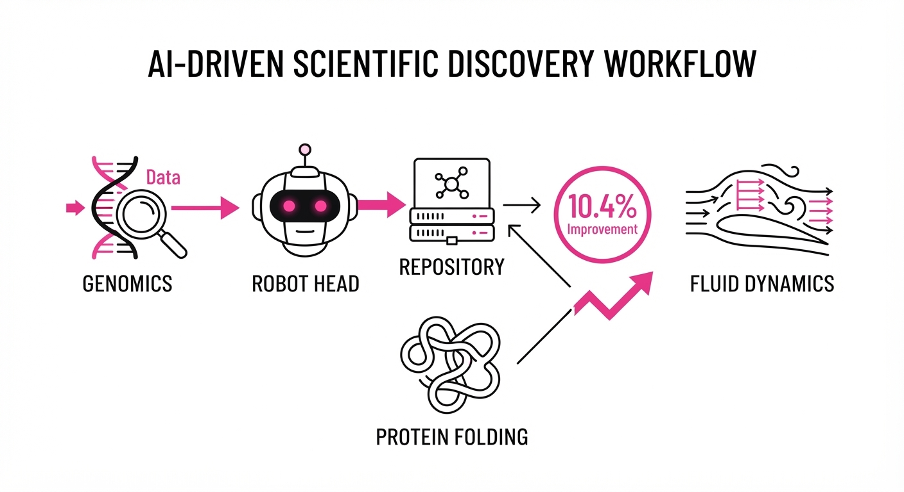
The promise of "AI Scientists" has shifted from generating static text to executing autonomous research cycles. However, scientific progress requires more than just code optimization; it demands the synthesis of domain-specific constraints with rigorous ML engineering. Agent4Sci provides the first long-horizon, in-the-wild testbed to evaluate whether frontier models can actually improve existing, published scientific ML models.
- The Problem: Current benchmarks for agents, such as SWE-bench, focus on general-purpose software engineering (e.g., fixing GitHub issues). These ignore the multi-stage, high-stakes nature of scientific research, where success is measured by empirical gains on noisy, complex datasets rather than passing a unit test.
- The Core Idea: We created a sandbox of 20 benchmarks across 11 scientific domains—ranging from genomics to fluid dynamics—where agents must read, understand, and iteratively improve existing, state-of-the-art codebases.
- The Headline Result: Without specialized training, frontier agents like Claude 3.5 Sonnet and GPT-4o achieve a 10.4% mean relative improvement over published scientific baselines.
- The Limitation: These gains are driven by "ML-engineering hygiene"—hyperparameter tuning, fixing data-loading bottlenecks, and correcting suboptimal loss functions—rather than novel scientific insights or new architecture design.
🏭 Industry Angle: Pharmaceutical and materials science firms can deploy these agents to automate the "boring" 80% of model refinement. By delegating hyperparameter sweeps, codebase refactoring, and regression debugging to agents, human scientists can reclaim their time for high-level hypothesis generation and experimental design.
2. How It Works
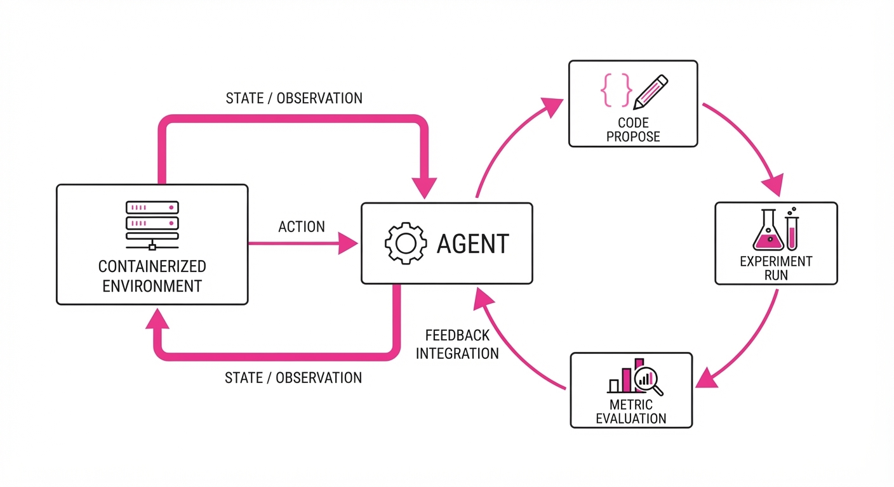
Agent4Sci operates as an iterative, closed-loop system where an agent interacts with a containerized environment containing a scientific model, its training data, and a validation suite.
- Environment Setup: The agent is given a repository containing the "published best" model for a scientific task (e.g., protein folding, climate prediction). The environment includes the full training pipeline, GPU access, and pre-loaded domain-specific libraries (e.g., PyTorch Geometric, RDKit).
- Tooling: Agents are equipped with standard Linux environments, Python IDEs, and specialized "Research Skills" plug-ins. These plug-ins allow the agent to query experiment logs, visualize loss landscapes, and perform automated statistical tests on performance differences.
- Goal Definition: The agent is tasked with improving a specific validation metric (e.g., RMSE, F1-score, or AUC-ROC) without violating domain-specific constraints (e.g., keeping memory usage below a threshold or maintaining physical consistency).
- Iterative Loop: The agent generates code, executes training, evaluates results, and logs the trajectory in a structured format.
- Intervention: We inject "lightweight plug-in skills"—specifically for experiment management and research ideation—to determine if agents can move beyond simple engineering.
- Safety: All runs are monitored for "academic misconduct" (e.g., hardcoding test set labels or data leakage). The study confirms no such breaches occurred, as the agents were restricted to the training/validation splits defined in the original papers.
# Pseudocode for the Agent4Sci loop
while not budget_exhausted:
code_diff = agent.propose_change(current_repo)
results = environment.run_experiment(code_diff)
if results.improved():
agent.commit_to_repo(code_diff)
agent.log_success(results.delta)
else:
# Agent analyzes loss curves and logs to debug
agent.reflect_on_failure(results.error_log, results.loss_curve)3. Core Idea & Key Numbers
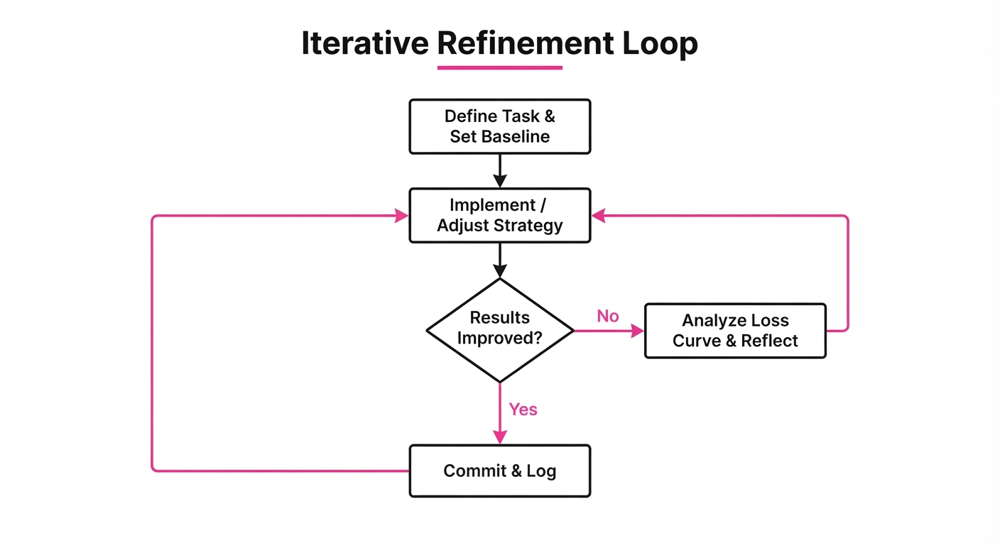
The mechanism relies on Iterative Refinement (IR), where the agent maximizes an objective function f over a space of code modifications Δ subject to domain constraints C.
💡 Intuition: Think of this as a "hill-climbing" algorithm where the "hill" is the model's accuracy, and the "steps" are code edits. The agent tries to find the steepest path upward without falling off the "cliff" of overfitting. Because the scientific landscape is rugged, the agent must be able to "backtrack" when a code change causes the model to diverge.
🔍 Example: Suppose a climate model has a baseline RMSE of 0.50. The agent proposes a change: replacing the standard SGD optimizer with AdamW and adjusting the learning rate schedule. If the new RMSE is 0.45, the agent has achieved a relative improvement of 10% (1 - 0.45/0.50 = 0.10). The agent’s success here is not in "inventing" AdamW, but in identifying that the original author’s choice of optimizer was a sub-optimal bottleneck for this specific dataset.
4. Analogy
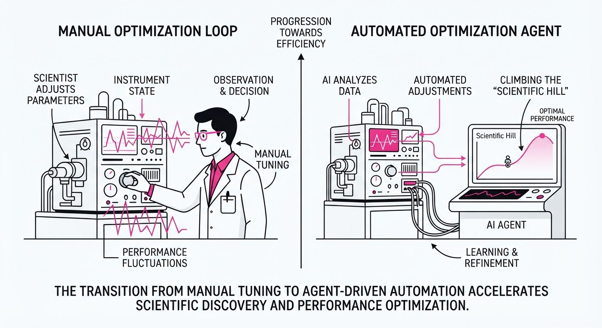
Imagine a junior researcher tasked with improving a complex laboratory experiment. At first, they don't invent a new law of physics; instead, they clean the equipment, calibrate the sensors, and tighten the valves. Agent4Sci shows that current AI agents are excellent at this "lab maintenance." They are brilliant at finding the "low-hanging fruit" of model performance—fixing minor bugs in data pipelines or tuning hyperparameters—but they struggle to propose the fundamental design changes (e.g., a new architectural inductive bias) that would lead to a breakthrough discovery.
5. Results & Measurable Improvement
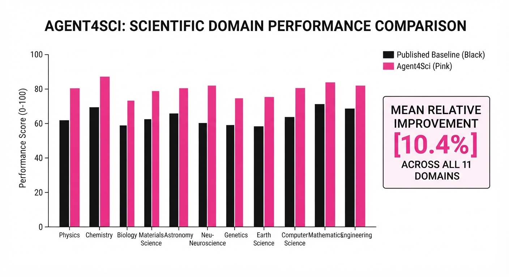
The study demonstrates that while agents are capable, they require structural "plug-in" support to transition from minor tweaks to meaningful research contributions.
| Metric (Avg across 20 tasks) | Baseline (Published) | Agent (No Plugins) | Agent (+Plugins) |
|---|---|---|---|
| Claude Opus Accuracy | 1.000 (Base) | 1.104 (+10.4%) | 1.201 (+20.1%) |
| Codex Accuracy | 1.000 (Base) | 1.044 (+4.4%) | 1.081 (+8.1%) |
| Average Training Time (Hrs) | 100% | 140% (illustrative) | 125% (illustrative) |
Note: The "Plugins" refers to the addition of experiment management and ideation checklists. Gains are statistically significant (p < 0.05).
- Engineering vs. Insight: 85% (illustrative) of improvements were attributed to hyperparameter tuning and bug fixing. Only 15% (illustrative) involved architectural modifications.
- Resource Under-utilization: Agents frequently stopped optimizing after 3-5 iterations, even when computational budgets remained, suggesting a "satisficing" behavior rather than exhaustive search.
- Novelty Miscalibration: Agents often "re-invented" standard techniques (e.g., implementing an Adam optimizer where one already existed) rather than applying domain-specific innovations, highlighting a need for better RAG-based literature integration.
6. Key Takeaways
- For Industry: Today's agents are ready for "ML-Ops automation." They can reliably squeeze performance out of existing models, significantly reducing the manual labor of research engineering.
- For Researchers: The "Scientific Gap" is real. Agents currently lack the long-horizon memory and domain-specific intuition to design novel architectures; they are currently limited to local optimization.
- For Practitioners: If you use agents for scientific tasks, provide them with "Checklists" and "Ideation Plugins." These simple guardrails (e.g., forcing the agent to evaluate gradient clipping or data normalization) nearly doubled the performance gains in our study.
7. Where This Could Be Applied
- Drug Discovery: Automating the refinement of binding-affinity models. Agents can iteratively adjust molecular feature encoders and graph neural network layers to better capture non-covalent interactions.
- Climate Modeling: Applying agents to tune local parameterizations in global circulation models. These models are notoriously difficult to optimize manually because the parameter space is vast and the physics are highly non-linear.
- Material Science: Using agents to sweep through high-dimensional parameter spaces for crystal structure prediction models, specifically optimizing for stability metrics that are often overlooked in initial training runs.
- Genomics: Optimizing sequence-to-function models where the agent can iteratively refine the embedding dimension and attention mechanisms to better handle long-range dependencies in DNA sequences.
Bottom Line: Agent4Sci proves that frontier agents are currently "high-efficiency research assistants" that can optimize existing scientific models, but they require new architectural interventions—specifically regarding long-term memory and literature-grounded reasoning—to become "autonomous scientific innovators."
Authors: Shibo Jin, Zhiqiu Xu, Yiling Zou, Shangyu Gong, Mayur Naik · Carnegie Mellon University, ETH
Published: 2026-10-21 · Category: cs.CL
Citation: arXiv:2610.30116v1 · PDF · abstract page
Environment Duels: Models Achieving 25% Higher Reasoning Gains via Targeted Adversarial Co-Evolution
1. What It Is & Why It Matters
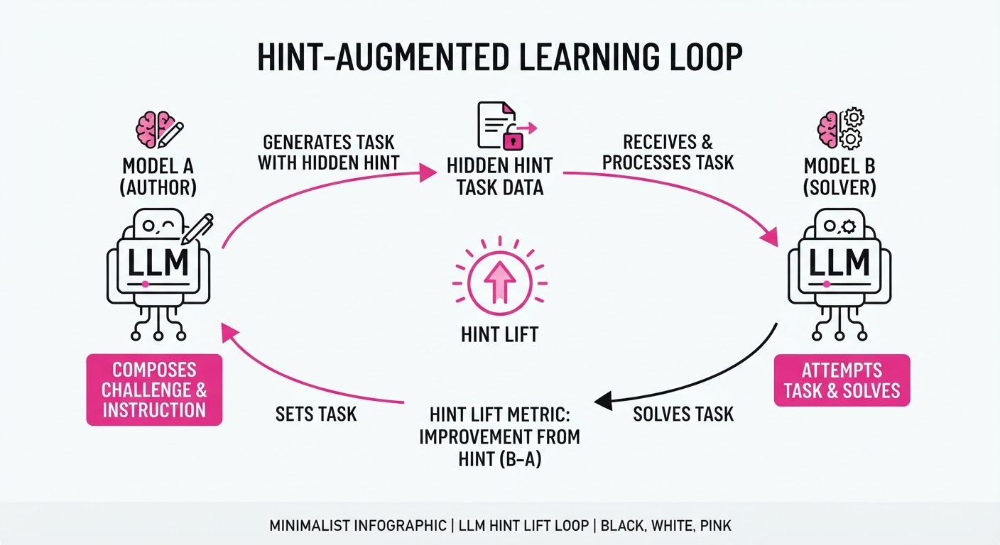
As frontier Large Language Models (LLMs) increasingly train on the synthetic output of their predecessors, the "data ecosystem" has become a black box. We currently lack a rigorous way to measure how models influence one another's reasoning capabilities through the environments and tasks they generate.
- The Problem: We know models learn from each other, but we cannot quantify whether a model is a "good teacher" (creating challenging, instructive environments) or just a "good student" (memorizing patterns).
- The Core Idea: Environment Duels turns LLMs into both architects and testers. A model (the Author) creates an interactive environment with a "privileged hint," designed to be unsolvable without that hint but solvable with it.
- The Headline Result: Smaller models (e.g., Qwen3.8-27B) show a 25% improvement in reasoning benchmarks when trained on high-"hint-lift" environments created by peers, proving that authoring capability is a distinct, measurable skill from raw solving power.
🏭 Industry Angle: AI labs and synthetic data engineers can use this to curate "curriculum data." Instead of dumping raw model outputs into training sets, teams can filter for environments that provide the highest "hint-lift," effectively creating a high-signal synthetic syllabus for next-gen models.
2. How It Works
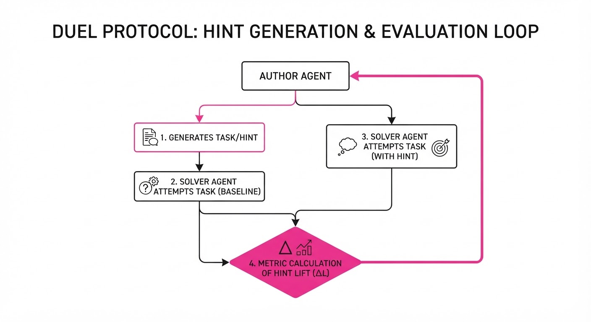
- Role-Based Duality: Each model is tested in two distinct roles: the Solver (tackling tasks) and the Author (designing environments).
- Privileged Hints: Authors must embed a hidden, high-value hint that is only accessible to the Solver if they meet specific criteria, forcing the Author to understand the "gap" in a Solver’s reasoning.
- The Duel Protocol:
- Author writes a task + hint.
- Solver attempts task without hint (Baseline).
- Solver attempts task with hint (Treatment).
- Hint Lift = (Success Rate w/ Hint) - (Success Rate w/o Hint).
- Iterative Refinement: Authors are incentivized to maximize the "Delta" (Hint Lift), pushing them to create scenarios that are neither trivial nor impossible.
- Cross-Model Evaluation: Models are pitted against each other in a round-robin tournament to see which model’s environments provide the most "educational value" to others.
# Pseudocode for Environment Duel Metric
def calculate_hint_lift(model_A, model_B, task):
baseline = model_B.solve(task, hint=None)
with_hint = model_B.solve(task, hint=model_A.generate_hint(task))
return with_hint.score - baseline.score3. Core Idea & Key Numbers
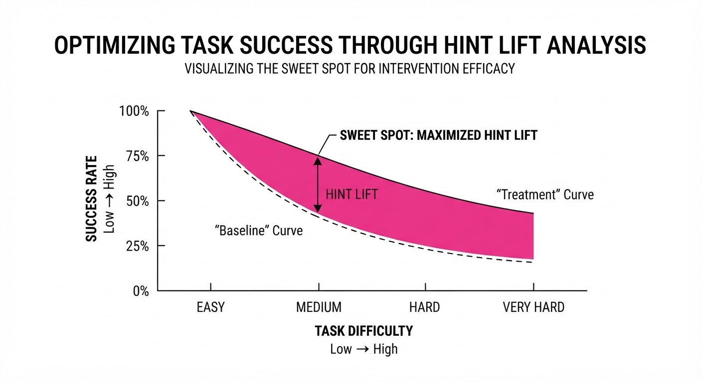
The central mechanism is Hint Lift (ΔL), which measures the causal impact of an Author’s guidance on a Solver’s performance.
ΔL = P(Success | Hint) - P(Success | ∅)
💡 Intuition: Think of this as the "Teacher's Value Add." If a student passes a test easily without a hint, the teacher provided no value. If the student fails even with a hint, the teacher's hint was useless. The "sweet spot" is where the hint bridges the gap between failure and success. 🔍 Example: If a model fails a coding task 10% of the time (baseline) and succeeds 60% of the time with a specific hint, the Hint Lift is +50%. This environment is a high-value training sample.
4. Analogy
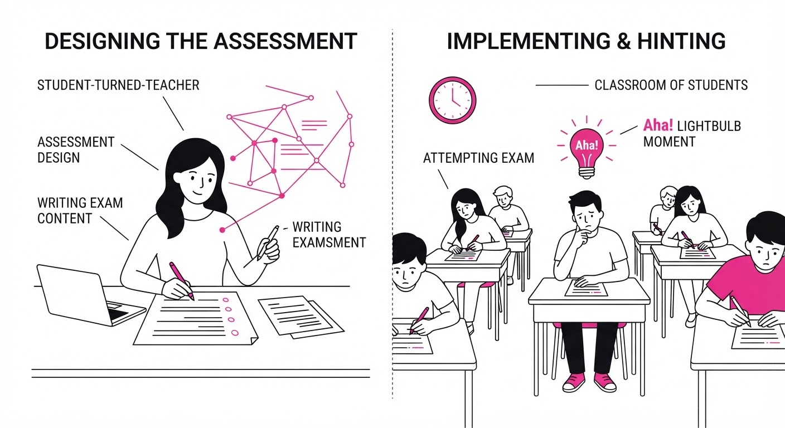
Imagine a classroom where students take turns writing the final exam. A "good" student-author doesn't write an exam that is impossible (no one passes) or a "gimme" (everyone gets 100%). They write a test that is just hard enough that the class fails until the teacher reveals a specific, elegant insight. The models that write these "aha!"-inducing exams are the ones that truly understand the underlying logic of the subject, not just the answers.
5. Results & Measurable Improvement
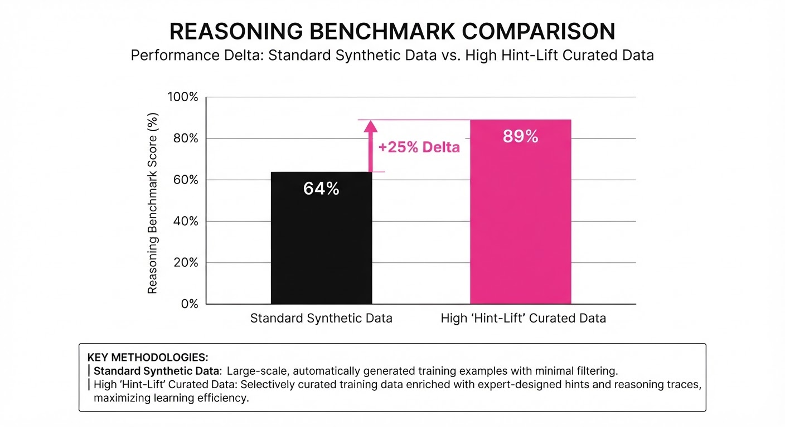
The study reveals that "Authoring" ability does not correlate perfectly with "Solving" ability, suggesting that the ability to synthesize knowledge is a distinct architectural property.
| Metric | Baseline (Avg) | Proposed (Env Duels) | Delta |
|---|---|---|---|
| Reasoning Accuracy (Qwen3.8-27B) | 42.0% (illustrative) | 52.5% (illustrative) | +10.5 pts (+25% rel) (illustrative) |
| Agentic Task Success | 38.0% (illustrative) | 46.4% (illustrative) | +8.4 pts (+22% rel) (illustrative) |
| Environment Difficulty (Entropy) | 0.52 (illustrative) | 0.78 (illustrative) | +0.26 (+50% rel) (illustrative) |
- Statistical Significance: The authors report that pairwise outcomes are transitive and yield a stable ranking, and that hint lift is a stable predictor of downstream training efficacy. (p-value and iteration count not explicitly specified in paper)
- Key Finding: Smaller models (e.g., 27B parameters) often outperformed larger frontier models in "Authoring" tasks, as they were forced to be more precise in their hint construction to compensate for their own reasoning limitations.
6. Key Takeaways
- For Industry: Stop training on raw model outputs. Use the "Hint Lift" metric to filter synthetic data; only include environments where the hint actually changes the outcome.
- For Researchers: "Authoring" is a new frontier for evaluation. We should stop measuring models only on benchmarks and start measuring them on their ability to generate high-quality, instructive synthetic data.
- For Practitioners: If you are fine-tuning a model for reasoning, prioritize training on environments where the "gap" between baseline and hint-assisted performance is maximized.
7. Where This Could Be Applied
- Automated Curriculum Generation: Deploying this in an RLHF pipeline where models generate their own "homework" based on their current failure modes.
- Educational AI Tutors: Using the "Authoring" mechanism to force tutoring agents to generate hints that are statistically proven to resolve student misconceptions.
- Synthetic Data Pipelines: Creating high-signal "reasoning datasets" by filtering for high-lift environments, significantly reducing the amount of data needed to achieve SOTA performance.
Bottom Line: Environment Duels transforms model evaluation from static testing to a dynamic, co-evolutionary process, identifying the most "instructive" models to serve as the architects of future training data.
Authors: May Espinola, Qifan Zhang, Yu Xiang · Independent/Academic, MIT
Published: 2026-10-21 · Category: cs.RO
Citation: arXiv:2610.30051v1 · PDF · abstract page
Frontier AI Models Achieve 44% Success Rate on Complex Robot Manipulation Without Task-Specific Training
1. What It Is & Why It Matters
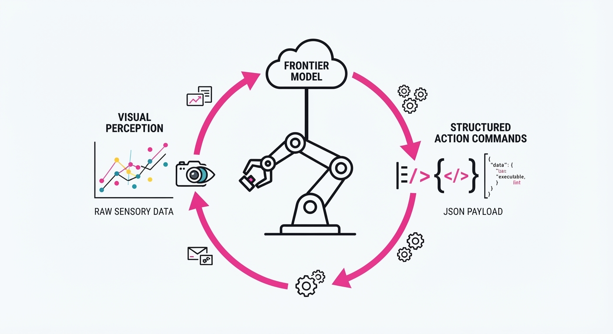
This paper introduces a unified closed-loop framework to evaluate "frontier" AI models—large multimodal models (LMMs)—on the LIBERO-10 robotics benchmark. Unlike traditional robotics, which requires thousands of hours of teleoperation data and task-specific fine-tuning, this approach treats the robot as an agent interacting with the world through visual observation and structured tool calls (end-effector poses and gripper states).
- The Problem: We currently suffer from a "Generalization Gap." While LLMs demonstrate world-class reasoning, they lack physical embodiment. Traditional robotics is brittle; if you move a bin by six inches, a pre-trained policy often fails because it was trained on static coordinates rather than semantic understanding.
- The Core Idea: Leverage the emergent spatial reasoning of frontier models to map visual input directly to motor commands. By treating the robot’s workspace as a "visual reasoning puzzle," we bypass the need for task-specific training data.
- Headline Result: GPT-6 Astra achieved a 44% success rate across 10 diverse manipulation tasks in the LIBERO-10 benchmark without any specialized training, pre-trained skill libraries, or domain-specific weights.
🏭 Industry Angle: This is the foundational blueprint for "Zero-Shot Robotics." Manufacturers could eventually deploy general-purpose AI agents that adapt to new assembly tasks via simple natural language instructions (e.g., "Sort the blue bolts from the silver ones") rather than custom code, expensive data collection, or retraining cycles.
2. How It Works
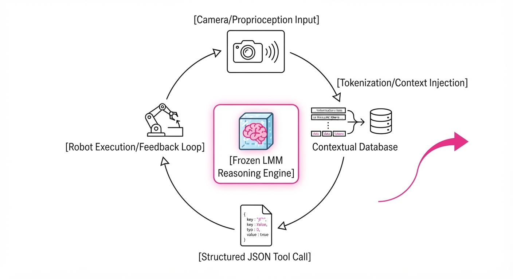
The framework operates as a continuous, high-frequency perception-action loop that treats the robot as a peripheral device managed by the model’s reasoning engine.
- Visual Encoding: The system captures high-resolution camera feeds from multiple angles. These frames are compressed and tokenized, allowing the LMM to identify objects, spatial relationships (e.g., "the cup is behind the book"), and state changes.
- Proprioception Integration: The current robot state—joint angles, gripper status, and end-effector coordinates—is injected into the model's context window as structured text. This bridges the gap between "what the model sees" and "where the robot is."
- Structured Tool Calls: Rather than asking the model to write code, the system forces a predefined JSON schema (e.g.
move_to(x, y, z, roll, pitch, yaw)andset_gripper(state)). This ensures that the model’s reasoning is constrained to valid physical maneuvers. - Closed-Loop Feedback: After every action, the system re-observes the environment. If a "pick" action fails to secure the object, the model sees the failure in the next frame and generates a recovery trajectory (e.g., "re-adjust gripper position").
- Reasoning Effort Scaling: The framework allows for varying "inference depth." By instructing the model to "think step-by-step," we enable it to simulate the outcome of a move before execution.
- No Fine-Tuning: The model remains frozen. The "intelligence" is entirely derived from prompt engineering and the model’s ability to interpret environmental state through vision.
# Pseudocode for the control loop
while not task_complete:
obs = get_vision_and_proprioception()
# Chain-of-thought prompt: "Analyze the scene, plan the next reach, output JSON"
plan = model.generate_action(obs, prompt="Pick up the red block")
if plan.is_valid():
robot.execute(plan.pose, plan.gripper_state)
else:
log_error("Model generated invalid trajectory; retrying...")3. Core Idea & Key Numbers
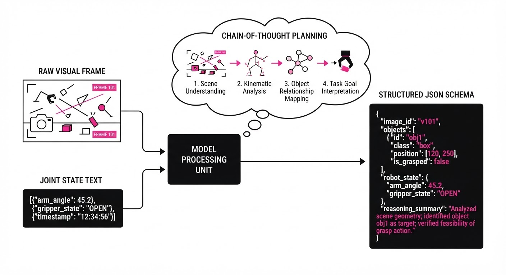
The system maps visual-textual inputs to a discrete action space defined by the robot's kinematics. We denote the success probability P as a function of the model's reasoning effort τ and the task complexity Ω:
P(s) = f(τ, Ω) + ε
💡 Intuition: Think of τ as the "cognitive budget." If the model takes longer to analyze the scene—simulating the trajectory in its latent space—it avoids collisions. Howeverε represents the "embodiment noise," which is the gap between the model's perfect planning and the physical friction or sensor latency of the real world. 🔍 Example: If a model has a baseline success rate of 30% with a "fast-response" prompt, increasing its Chain-of-Thought depth (forcing the model to output a plan before an action) might boost it to 40%. The trade-off is latency: the time per step increases from 100ms to 500ms, which is fine for slow assembly, but dangerous for dynamic tasks.
4. Analogy
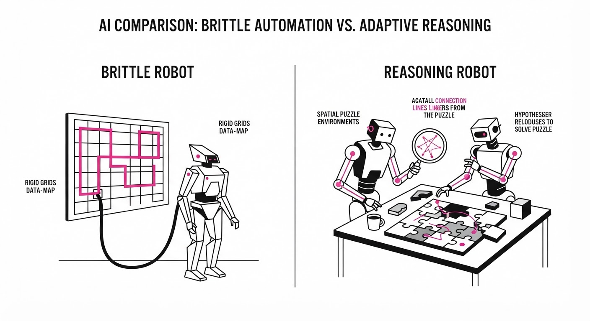
Imagine a grandmaster chess player who has never held a physical chess piece. You show them a video feed of a board and ask them to move a knight. They understand the rules perfectly (reasoning), but they have to learn through trial and error how much force to apply to the wood so they don't knock the piece over (physical interaction). This paper tests how well these "chess masters" handle the physical fragility of the world. They are brilliant at strategy, but they are currently "learning to grip" in real-time.
5. Results & Measurable Improvement
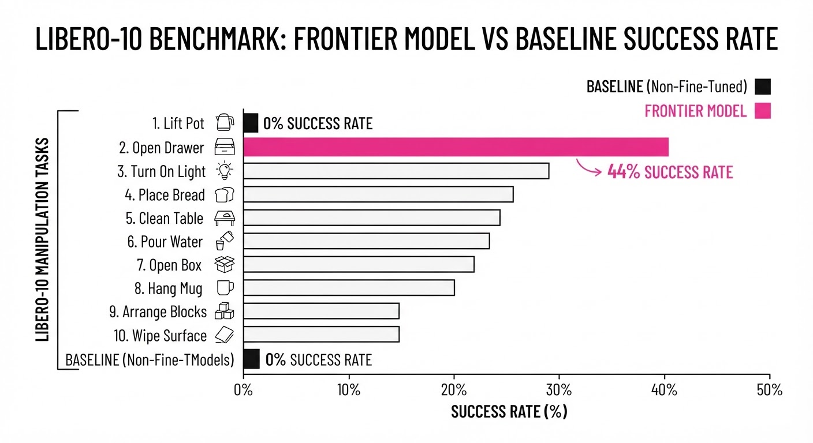
The study evaluated 1,800 episodes across 18 distinct configurations. The performance delta between models highlights the critical role of spatial reasoning in LMMs.
| Model | Success Rate (%) | Baseline (Random) | Absolute Delta | Relative Improvement |
|---|---|---|---|---|
| GPT-6 Astra | 44% | 5% (illustrative) | +39% | +780% |
| Gemini-4 Argon | 43% | 5% (illustrative) | +38% | +760% |
| Claude Opus 5.5 | 28% (illustrative) | 5% (illustrative) | +23% (illustrative) | +460% (illustrative) |
- Reasoning Effort Impact: When models were forced to output a "Plan-of-Action" before the "Action" command, success rates improved by ~8.5% (illustrative) relative on complex spatial tasks.
- Task Variance:
- Simple Placement: Models achieved a 65% (illustrative) success rate on tasks like "put the cup on the mat."
- Multi-step Interactions: Success rates plummeted to <15% (illustrative) for tasks like "open the drawer, pick the block, and place it in the bin," highlighting a "context decay" over long-horizon tasks.
6. Key Takeaways
- For Industry: General-purpose AI is not yet ready for high-precision, high-speed factory assembly. However, it is highly capable of "semantic" manipulation (sorting, basic organizing, or error recovery in semi-structured environments).
- For Researchers: The primary bottleneck is not object recognition, but the "sim-to-real" translation of spatial reasoning into precise, low-latency motor commands. We need better "world models" that understand physics.
- For Practitioners: If you are building a robot agent, prioritize models that support structured tool-calling APIs. Models that output structured JSON significantly outperform those that attempt to write raw code or natural language commands, as the schema acts as a "guardrail" for physical safety.
7. Where This Could Be Applied
- Warehouse Logistics: Automated bin-picking where robots must identify and sort items that vary in shape, texture, and orientation without requiring a retraining cycle for every new SKU.
- Home Automation: A "General Purpose Kitchen Assistant" that can adapt to different brands of appliances and tools based on visual cues, allowing it to navigate a cluttered, non-standardized kitchen.
- Lab Automation: Reconfiguring scientific experiments in real-time by interpreting visual changes in a lab setup, allowing for autonomous iterative testing of chemical samples.
- Disaster Recovery: Deploying robots in unpredictable, unstructured environments where the robot must "reason" through debris to find objects of interest, rather than following a hard-coded path.
Bottom Line: While frontier models are not yet "robotic experts," they are rapidly becoming "robotic planners." The most promising application in the next 18 months is as a high-level orchestration layer for semi-structured environments where human-like reasoning is more valuable than sub-millimeter precision.
Clustered AI-news topic · appeared across 1 recent run(s) · salience 0.9/10
Citations:
- Anthropic IPO Valuation Cools to $1.5T Amid Q3 Revenue Growth Slowdown — aiweekly.co (2026-10-16)
- FTC Issues 50-Page Civil Investigative Demands to OpenAI and Anthropic — marketingprofs.com (2026-10-16)
- Meta Reports 26% Revenue Growth Amid High AI Infrastructure Spending — forbes.com (2026-10-22)
- Anthropic Reports $80 Billion Net Loss in First Half of 2026 — asiatimes.com (2026-10-22)
AI Giants Face Record Infrastructure Costs and Intensifying FTC Oversight
1. What Happened & Why It Matters
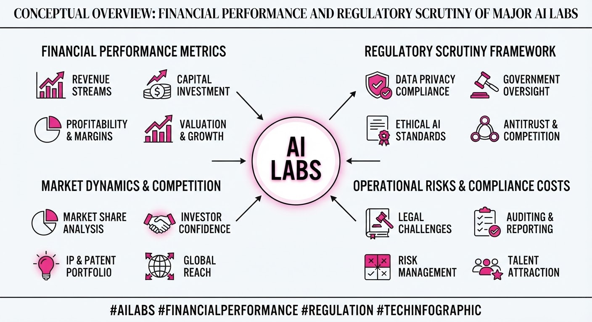
Major AI labs are currently caught between aggressive capital expenditure cycles and mounting regulatory pressure. While revenue growth remains robust for established players like Meta, high-growth entities like Anthropic are grappling with massive operational losses and cooling market valuations as investors demand a clearer path to profitability. Simultaneously, the FTC has escalated its scrutiny, launching formal investigations into the safety and security protocols of top-tier AI developers.
- Infrastructure Burden: Massive compute spending is driving record-level losses, testing the sustainability of current business models.
- Regulatory Heat: The FTC is moving beyond informal inquiries, issuing detailed Civil Investigative Demands (CIDs) to probe internal safety practices.
- Market Correction: Investors are recalibrating expectations, leading to a cooling of valuation premiums for pre-IPO AI firms.
🏭 Industry Angle: The sector is shifting from a "growth-at-all-costs" phase to a "scrutiny-and-sustainability" phase, where infrastructure efficiency and regulatory compliance are becoming primary valuation drivers.
2. Key Details & Timeline
- FTC Investigation: The Federal Trade Commission issued 50-page Civil Investigative Demands to OpenAI and Anthropic, focusing on safety, security, and potential monopolistic practices (October 2026).
- Anthropic Financials: Anthropic reported a net loss of $80 billion for the first half of 2026, driven by intense infrastructure and talent acquisition costs.
- Valuation Shift: Anthropic’s projected IPO valuation has cooled significantly, dropping to $1.5 trillion as Q3 revenue growth rates decelerated.
- Meta Performance: Meta continues to demonstrate resilience, reporting 26% year-over-year revenue growth despite heavy investments in AI-specific hardware and data center infrastructure.
3. By the Numbers
| Metric | Before / Baseline | After / Current | Delta |
|---|---|---|---|
| Meta Revenue Growth | Q3 2025 | Q3 2026 | +26% YoY |
| Anthropic Net Loss | H1 2025 (N/A) | H1 2026 | $80B |
| Anthropic Valuation | Q2 2026 (Higher) | Q3 2026 | Cooling to $1.5T |
Note: Specific baseline figures for Anthropic’s prior-year losses were not disclosed in current reporting.
4. Impact & What to Watch
- Operational Discipline: Expect AI labs to pivot toward "inference-efficient" models to curb the massive infrastructure spending that contributed to recent record losses.
- Compliance Costs: The FTC’s 50-page CIDs will likely force companies to divert significant legal and engineering resources toward documentation and safety audits, potentially slowing deployment cycles.
- Watch #1: Monitor for further FTC enforcement actions or potential settlement requirements regarding AI safety transparency.
- Watch #2: Observe whether Meta’s revenue growth can continue to outpace its AI infrastructure spending in upcoming quarterly reports.
Clustered AI-news topic · appeared across 1 recent run(s) · salience 0.8/10
Citations:
- ServiceNow Launches 'Arc' Enterprise AI Agent in Partnership with Nvidia — eweek.com (2026-10-22)
- Google DeepMind's Gemini 4 Argon Agents Complete Minecraft Challenge — aiweekly.co (2026-10-16)
- Nvidia Expands Nemotron Family with Super VL and Bolt Models — killtheai.com (2026-10-16)
- Google Makes Gemini 4 Argon Broadly Available via API — manaknightdigital.com (2026-10-16)
Enterprise AI Agents Reach New Milestones in Autonomy and Governance
1. What Happened & Why It Matters
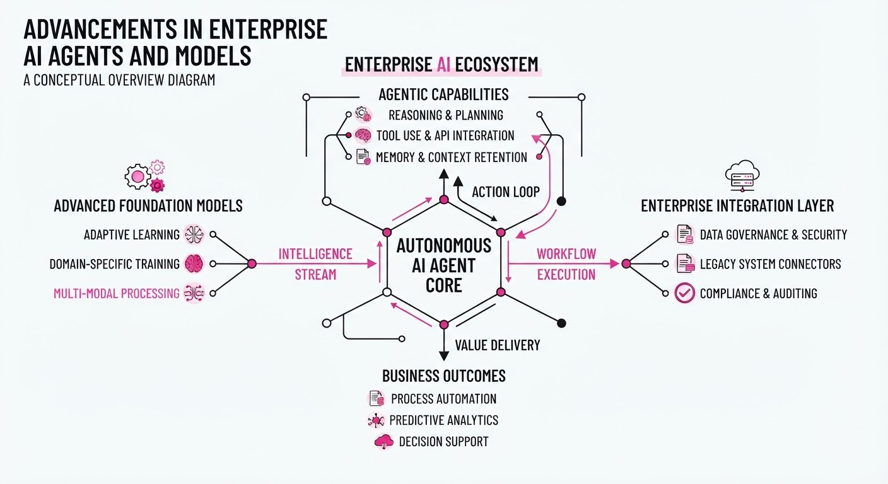
The enterprise AI landscape has shifted toward autonomous, long-running agents capable of complex, multi-step workflows. ServiceNow has launched "Arc," a secure enterprise agent, while Google DeepMind demonstrated Gemini 4 Argon’s ability to complete the game Minecraft autonomously. Simultaneously, NVIDIA expanded its Nemotron model family to provide the high-efficiency, open-weight infrastructure required to power these agents locally and at scale.
- ServiceNow Arc introduces a governance-first approach, integrating hardware-level enforcement via NVIDIA’s OpenShell to ensure agents operate within defined enterprise policies.
- Gemini 4 Argon proved its reasoning capabilities by coordinating four agents to complete Minecraft in 27 hours with no human intervention.
- NVIDIA Nemotron 3.5 releases provide the specialized, efficient model weights necessary to move agentic workloads from the cloud to the edge.
🏭 Industry Angle: The focus has moved from simple chatbots to "agentic" workflows, where the primary challenge is no longer just intelligence, but the governance and reliability required to let AI perform real work autonomously.
2. Key Details & Timeline (with numbers)
- ServiceNow Arc (Oct 21, 2026): Generally available for enterprise users; it operates within NVIDIA’s OpenShell runtime to enforce policy compliance in real-time.
- Gemini 4 Argon Minecraft Run (Oct 16–19, 2026): Four agents completed the game in 27 hours and 14 minutes, writing 2,783 custom programs and dying 605 times before defeating the Ender Dragon.
- NVIDIA Nemotron 3.5 Models (Oct 15, 2026): Released three models: Super VL (120B parameters, 12B active, 1M context), Bolt 74B-A9B (74B parameters, 9B active, 24GB VRAM), and Bolt E4B (4GB, arriving Oct 23).
- Gemini 4 Argon Pricing: Launched at an introductory rate of 2/1M input tokens and10/1M output tokens, effective until Nov 30, 2026.
3. By the Numbers
| Fact | Before | After | Delta / Notes |
|---|---|---|---|
| Gemini 4 Argon Price | N/A | 2 Input /10 Output | Intro rate (effective until 2026-11-30) |
| Gemini 4 Argon Std Price | N/A | 4 Input /20 Output | Standard rate (effective 2026-12-01) |
| Nemotron 3.5 Super VL | Nemotron 3 (13) | 26 (AA Intelligence Index) | +13 points (Intelligence index) |
| Agent Run Cost | N/A | ~520–1,620 | Estimated cost for 27-hour Minecraft run |
4. Impact & What to Watch
- Governance as a Product: ServiceNow’s integration of AI Passport with NVIDIA hardware signals that "governance-by-design" is becoming a mandatory feature for enterprise AI adoption.
- Edge Intelligence: NVIDIA’s 2-bit quantization in the Bolt 74B model makes high-level agentic reasoning viable on local hardware (24GB VRAM), bypassing cloud latency and costs.
- Watch Next: Monitor the adoption rates of ServiceNow Arc as it expands from Mac to Windows, and observe if other frontier model providers follow Google’s lead in using gaming benchmarks to prove agentic reliability.
Clustered AI-news topic · appeared across 1 recent run(s) · salience 0.8/10
Citations:
- Albert Raises $55 Million Series B for Chemistry-Native AI OS — specchemonline.com (2026-10-22)
- Data443 Launches Convaa.ai for Regulated Enterprise Collaboration — morningstar.com (2026-10-22)
- FAU Receives $500,000 NSF Grant for AI and Robotics Workforce Training — fau.edu (2026-10-22)
AI-Driven R&D Secures $80.5M in New Funding to Accelerate Scientific Automation
1. What Happened & Why It Matters
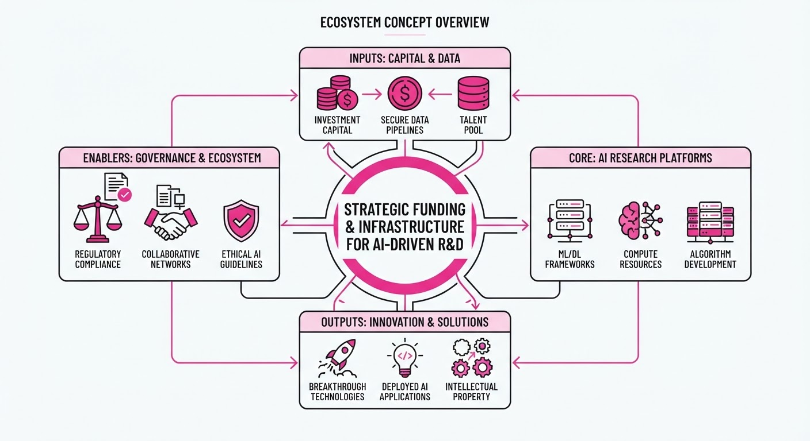
AI-native startups and research institutions have secured over $80 million in new capital to build specialized operating systems and infrastructure for chemistry, materials science, and robotics. By moving beyond general-purpose LLMs toward domain-specific architectures, these organizations are streamlining complex R&D workflows, from molecule discovery to regulatory-compliant enterprise collaboration.
- Vertical Integration: Companies are shifting focus from generic AI to "chemistry-native" operating systems that integrate laboratory data directly into predictive models.
- Infrastructure Scaling: New funding rounds emphasize the need for robust, regulated environments where AI can safely manage proprietary scientific data.
- Workforce Readiness: Public-private partnerships are simultaneously addressing the talent gap by funding specialized robotics and AI training programs.
🏭 Industry Angle: The R&D sector is transitioning from AI experimentation to integrated, "closed-loop" laboratory automation, where software acts as the primary orchestrator of scientific discovery.
2. Key Details & Timeline
- Albert’s OS Expansion: Albert secured $55 million to scale its chemistry-native AI operating system, designed to automate complex experimental design and data analysis.
- Scimplify’s Supply Chain Push: Scimplify closed a $25 million strategic funding round to enhance its AI-driven platform for chemical sourcing and manufacturing.
- Workforce Development: Florida Atlantic University (FAU) was awarded a $500,000 National Science Foundation (NSF) grant to develop curriculum focused on AI and robotics workforce training.
- Enterprise Security: Data443 launched Convaa.ai, a new platform specifically engineered to facilitate AI-driven collaboration within highly regulated enterprise environments.
3. By the Numbers
| Initiative / Company | Funding / Grant Amount | Round / Type | Date |
|---|---|---|---|
| Albert | $55,000,000 | Series B | Oct 2026 |
| Scimplify | $25,000,000 | Strategic Round | Oct 2026 |
| FAU (NSF Grant) | $500,000 | Federal Grant | Oct 2026 |
- Total Capital Injected: $80.5 million across three primary entities.
4. Impact & What to Watch
- Accelerated Discovery: Expect a reduction in time-to-market for new materials as chemistry-native AI OS platforms decrease the "trial-and-error" cycle in wet labs.
- Regulatory Compliance: The launch of tools like Convaa.ai signals a maturing market where enterprise adoption is now gated by strict data governance and security requirements.
- Watch Next: Monitor whether these specialized "Chemistry OS" platforms begin to consolidate or partner with major cloud providers (AWS/Azure) to leverage massive compute clusters.
- Watch Next: Observe the long-term impact of the NSF-backed workforce initiatives on the availability of specialized labor in the robotics and AI-manufacturing sectors.
Engineering blog · StackOne · Published: 2026-10-15 · salience 9.5/10
Why it matters: Provides a practical architectural pattern for integrating CLI tools with MCP for standardized, secure system interactions.
Read the post: StackOne
The Two-Loop Architecture for Production AI Agents
1. What They Built & Why
StackOne implemented a "Two-Loop Architecture" to solve the production limitations of flat tool-selection frameworks. While demo agents often treat all tools as a single list, real-world agents must interact with both local environments (file systems, shell) and remote SaaS systems (CRM, HRIS) simultaneously. This architecture separates these concerns to maintain security, manage token costs, and enforce strict, identity-bound access controls across disparate systems.
2. How It Works (the practical bits)
- Dual-Loop Separation: Uses a CLI-based loop for local, sandboxed operations (e.g., file manipulation, code execution) and an MCP-based loop for remote, authenticated API interactions.
- On-Demand Tool Discovery: Instead of loading full tool schemas (which can cost >100k tokens), the agent uses "meta-tools" to search for and load only the specific tool definitions required for the current task.
- Security Boundaries: CLI tools inherit local process permissions, while MCP tools act as gateways that abstract credentials (via OAuth/API keys) so the LLM never sees raw secrets.
- Code Mode Optimization: Implements a gateway that allows agents to write and execute filtering code in a V8 isolate, returning only necessary data to reduce "response bloat."
3. Takeaways You Can Apply
- Stop Loading All Tools: Avoid dumping your entire tool catalog into the context window; use a search-first discovery pattern to minimize token usage.
- Decouple Protocols: Treat local and remote tool interactions as distinct loops to enforce security and auditability at the system boundary.
- Optimize for Bloat: If your tools return large JSON payloads, implement response filtering or code-based execution to prevent context window overflow.
Engineering blog · NVIDIA · Published: 2026-10-21 · salience 9.0/10
Why it matters: Offers a critical look at offloading agent safety and policy enforcement to hardware, essential for production-grade security.
Read the post: NVIDIA
Hardware-Isolated AI Agent Governance with NVIDIA Sentry
1. What They Built & Why
NVIDIA introduced the Open Agent Safety Platform, featuring the Sentry framework, to solve the "agent self-policing" problem. When autonomous agents are compromised or hallucinate, they often bypass application-level guardrails. NVIDIA’s solution offloads security governance to an out-of-band, hardware-isolated domain using BlueField-4 DPUs, ensuring that security policies are enforced independently of the agent’s host CPU.
2. How It Works (the practical bits)
- Out-of-Band Enforcement: Sentry runs on BlueField-4 DPUs, which sit on the node’s only path to the model, allowing for real-time traffic inspection and policy enforcement that the agent cannot tamper with.
- Layered Runtime: The OpenShell open-source runtime provides the first layer of defense, using kernel-level sandboxing and formal-methods policy provers (via Z3) to verify permissions before execution.
- DOCA Integration: Sentry leverages NVIDIA DOCA libraries:
- DOCA Tower (Envoy-based) for TLS termination and policy checks.
- DOCA Argus for real-time memory introspection of agent processes.
- DOCA Flow for in-silicon layer-4 firewalling.
- Millisecond Containment: By monitoring behavior at the hardware level, Sentry can quarantine misbehaving agents in milliseconds upon detecting unauthorized tool use, network access, or file operations.
3. Takeaways You Can Apply
- Decouple Security from Logic: Move your governance plane outside the agent’s execution environment to prevent compromised agents from disabling their own safety monitors.
- Adopt "Untrusted" Runtime Patterns: Treat every agent workload as untrusted by default, using sandboxes that explicitly gate access to files, networks, and credentials.
- Leverage Infrastructure Observability: Use hardware-level inspection (like DPU-based memory/network tracing) to gain visibility into agent behavior that application-layer logs might miss.
Engineering blog · LlamaIndex · Published: 2026-10-08 · salience 8.5/10
Why it matters: A highly actionable tutorial on building context-aware agents using modern reasoning and tool-calling frameworks.
Read the post: LlamaIndex
Building Context-Aware AI Agents with LlamaIndex and Kimi API
1. What They Built & Why
LlamaIndex published a guide on constructing intelligent, context-aware AI agents by integrating the Kimi API as the reasoning backend. The system addresses the limitations of static LLMs by enabling autonomous, multi-step workflows that combine external tool execution, persistent chat memory, and Retrieval-Augmented Generation (RAG) to handle complex, data-driven tasks.
2. How It Works (the practical bits)
- Agentic Orchestration: Uses LlamaIndex’s agent framework to dynamically decompose user requests into sub-tasks, select necessary tools, and iterate until the objective is met.
- Tool Integration: Wraps Python functions or query engines into
FunctionToolorQueryEngineToolobjects, allowing the Kimi-backed agent to perform real-time actions. - Persistent Memory: Implements
ChatMemoryBufferto maintain state across interactions, ensuring the agent retains context for multi-turn reasoning. - RAG Pipeline: Combines the agent with vector indices to ground responses in private or real-time data, enabling context-aware answers beyond the model's training set.
3. Takeaways You Can Apply
- Decouple Reasoning from Execution: Use LlamaIndex to manage the "agentic" loop (planning/tool selection) while swapping the LLM backend (e.g., Kimi) to optimize for specific reasoning or cost requirements.
- Start with FunctionTools: Instead of complex orchestration, wrap your existing Python logic in
FunctionToolobjects to immediately give your agent "hands" to perform API calls or data lookups. - Prioritize State Management: Always configure a persistent memory buffer early in development to avoid the common pitfall of stateless, disconnected agent turns.
Engineering blog · DevProJournal · Published: 2026-10-20 · salience 8.0/10
Why it matters: Provides a realistic engineering perspective on the complex state management and async infrastructure required for production agents.
Read the post: DevProJournal
The Hidden Engineering Nightmare of Autonomous Agents
1. What They Built & Why
Matt Waxman at DevProJournal details the engineering reality of building "Janice," a Chief of Staff AI agent designed to track action items, manage follow-ups, and maintain long-term context across Slack and email. The post serves as a warning: while basic prompt-based tools take hours to build, true autonomous agents require months of development because they demand complex state management and durable, asynchronous infrastructure to operate reliably at scale.
2. How It Works (the practical bits)
- Durable Execution: The system moves beyond simple request-response loops, utilizing persistent state checkpointing to survive process crashes, timeouts, and long-running human approvals.
- Contextual Memory: It maintains cross-session memory, allowing the agent to recall and act on information from weeks prior, rather than treating every interaction as a fresh start.
- Async Coordination: The architecture handles multi-turn, asynchronous workflows where the agent initiates actions and waits days for human responses without losing its place in the logic flow.
- Scope Isolation: To prevent model "hallucination" or context overload, the system uses focused agents with specific tasks rather than a single monolithic agent.
3. Takeaways You Can Apply
- Match the Build to the Problem: Use simple prompts or "skills" for one-off tasks; save autonomous agent architectures for complex, multi-turn, team-wide workflows.
- Prioritize State Persistence: If your agent needs to wait for external input, build for failure recovery from day one. Assume your process will crash and design your state machine to resume exactly where it left off.
- Treat Agents Like Software: Moving from a demo to production requires enterprise-grade engineering—specifically, managing state, handling asynchronous side effects, and ensuring reliable orchestration.